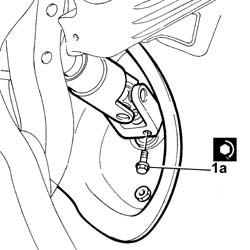

4110A40 Steering shaft JOINTS - Tighten bolts
- Path
- Procedures > 41 STEERING > 4110 steering control and linkage > 4110A steering control > 4110A40 Steering shaft JOINTS - Tighten bolts
- Kind
- repair procedure (removal / refitting; the operation number is the code)
- Applies to
- all engines; all production periods
- Interactive page
- https://sloeber94.github.io/elrnDB-lThss/en/#/172110
Applies to: all engines; all production periods
- Check the fastening of the steering control shaft coupling to the power assisted steering box rack.
1. If necessary, loosen the fixing bolt and tighten it to the recommended torque so that the fastening is correct.
 | Value - daNm | Fastening | Component | Ø |
|---|---|---|---|---|
1 | 2 | Bolt | STEERING SHAFT MOUNTING | M8 |
